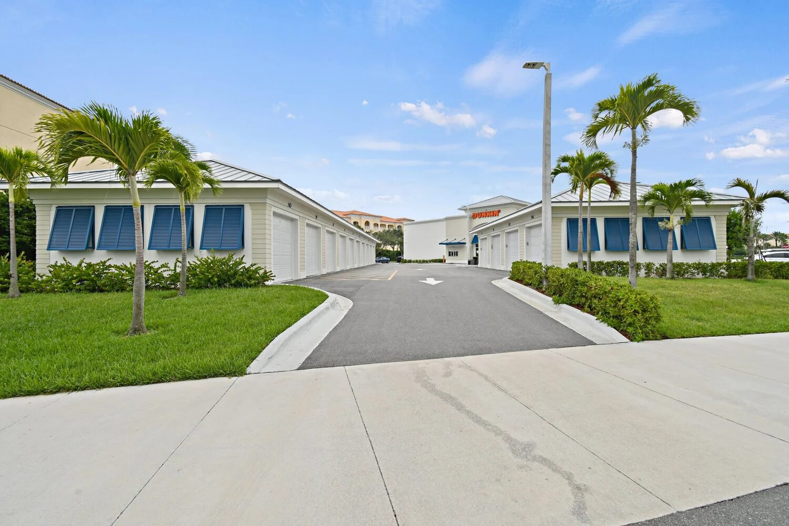

Specifying impact-rated windows for a Florida commercial project is an exercise in matching three documents: the wind load calculations from the engineer of record, the Florida Product Approval or Miami-Dade NOA from the glazing manufacturer, and the Division 08 spec section that ties them together. When those three documents disagree, the project stalls at plans review, RFI volume explodes at submittal, or - worst case - a product that can't meet the actual wind loads gets ordered and the schedule collapses. This guide walks through DP ratings, missile test levels, cyclic pressure testing, HVHZ vs non-HVHZ approval paths, and how to spec cleanly on commercial documents so all three pieces line up on day one.


What Impact Rated Means in Florida
Impact-rated windows are glazing assemblies - glass, frame, sealant, and anchorage - that have been tested under ASTM E1886 and ASTM E1996 and certified to withstand wind-borne debris impact followed by cyclic pressure loading without catastrophic failure. The complete product must hold a Florida Product Approval (an FL number in the BCIS database) or a Miami-Dade Notice of Acceptance (NOA). The approval is the legal compliance document for the permit. The marketing literature, the spec sheet, and the contractor's website are not.
In commercial work, the scope goes beyond windows in the residential sense. Storefronts, window walls, curtainwalls, sliding door systems, entrances, and skylight glazing all require matching approvals when they fall inside the wind-borne debris region, which covers most of Florida. For a broader walkthrough of the code pathway, see our Florida commercial glazing hurricane code article.
DP Rating: What Design Pressure Actually Means
Design Pressure (DP) is the structural pressure, measured in pounds per square foot, that a glazing assembly has been tested to withstand without failure. It is reported as a positive and negative pair - for example DP +55/-65 - because wind exerts both pushing (positive) and suction (negative) loads on a building envelope, and the negative load is typically higher in hurricane conditions. The DP rating is the performance ceiling of the assembly. The wind load calculated for the specific opening, at the specific elevation and exposure, must fall inside that ceiling.
Typical DP Ranges by Application
- DP50-DP55: Low-rise commercial in inland exposures, small to mid-size punched openings, many residential impact products.
- DP60-DP70: Coastal commercial, mid-rise elevations, larger storefront openings, standard commercial storefront systems like ESWindows ES-8000.
- DP80+: Tall commercial, HVHZ coastal, window wall and curtainwall on upper floors, heavy-duty commercial systems including ESWindows ES-9000.
How DP Is Tested
ASTM E1886 governs the physical test. The specimen - the full assembly, including glass, frame, anchors, and sealant - is mounted in a test chamber. Pressure cycles are applied at fluctuating percentages of the tested DP over 9,000 cycles. During the missile impact portion, the assembly takes a direct hit from either the small missile or large missile specified in ASTM E1996. The assembly must resist breach of the interior layer throughout. A single crack on the exterior is permitted; penetration into the building is not.
Missile Test Levels: Small Missile vs Large Missile
ASTM E1996 defines the missile projectile used in the impact phase. For commercial Florida work, there are two missile levels that matter:
Small Missile (Level D)
Small missile uses ten steel balls, 2 grams each, fired at 130 feet per second at specific target locations on the specimen. The test simulates wind-carried gravel from roofs and parking areas. Small missile certification applies to openings at or above 30 feet on non-HVHZ buildings. A typical application is upper-floor windows on an office building or hotel, outside Miami-Dade and Broward.
Large Missile (Level E)
Large missile uses a 9-pound 2x4 lumber missile fired at 50 feet per second. The test simulates structural debris - roof sheathing, fencing, siding - carried by hurricane winds. Large missile certification is required for all HVHZ openings (any elevation) and for all non-HVHZ openings below 30 feet. Most commercial storefront, ground-floor glazing, and mid-rise punched-opening work uses large missile. On a mixed-use project with ground-floor storefront and upper-floor windows, it is common to see large missile required on floors 1 and 2 and small missile acceptable above floor 3 - but many specs simplify to large missile throughout.
HVHZ: The Miami-Dade Path
Miami-Dade and Broward counties are the High-Velocity Hurricane Zone. HVHZ projects require products approved under TAS 201, TAS 202, and TAS 203 - the Miami-Dade testing protocols - and evidenced by a Miami-Dade NOA. An FL statewide approval alone does not cover HVHZ unless the approval specifically states HVHZ applicability. For an impact-rated glass requirements walkthrough including HVHZ, see the linked article.
Reading a Florida Product Approval Sheet
Every FL approval in the Florida Building Code Information System lists the same core data points. A clean read goes like this:
| Field | What to Verify |
|---|---|
| Manufacturer and Product | Matches the spec and the shop drawings |
| FL Number and Revision | Current revision, not expired |
| Category and Subcategory | Matches the application (storefront, window wall, sliding door, etc.) |
| Maximum Size (W x H) | Covers every opening in the project, regardless of size |
| Design Pressure (+/-) | Meets or exceeds the engineered wind load for the opening |
| Missile Level | Matches what the code requires at the opening elevation |
| HVHZ Applicability | Required if project is in Miami-Dade or Broward |
| Glass Makeup | Laminated with SGP or PVB, specific thicknesses, heat treatment |
| Frame Material and Section | Matches the specified aluminum section and depth |
| Anchorage | Condition detail matches the actual substrate (CMU, concrete, wood, steel) |
If any line on that list does not match the project conditions, the approval cannot be used as-is. Either the product is wrong, the specification is wrong, or the project condition falls outside the approval envelope and a different product is needed.
Glass Makeup on Impact-Rated Products
The glass inside an impact-rated IGU is always laminated - two lites bonded to a structural interlayer. Two interlayer chemistries dominate commercial:
SGP (SentryGlas)
Ionoplast interlayer, roughly 100 times stiffer than PVB and five times stronger. Used on larger commercial lites, high-DP conditions, and anywhere post-breakage structural capacity matters. Higher material cost but thinner interlayer thicknesses can offset total assembly thickness.
PVB (Polyvinyl Butyral)
Traditional laminated glass interlayer. Lower material cost, well-understood performance, suitable for most residential and lower-DP commercial applications. Thicker interlayers (typically 0.090 inch or thicker) are required for impact ratings versus decorative laminated glass.
Commercial specifications often default to SGP on high-rise work, coastal work, and large storefront openings. PVB is acceptable on most mid-rise and inland commercial. For a deeper look at the glass chemistry, see our impact glass vs laminated glass article.
DP Ratings by Commercial System Type
Typical DP rating ranges we see on commercial Florida projects, organized by system:
| System Type | Typical DP Range | Common Missile Level | Representative Product |
|---|---|---|---|
| Pre-glazed storefront (ground floor) | DP55 to DP70 | Large missile | ESWindows ES-8000 |
| Window wall (mid-rise) | DP65 to DP85 | Large missile | ESWindows ES-9000 |
| Curtainwall (mid- to high-rise) | DP70 to DP100+ | Large or small missile (by elevation) | ESWindows commercial |
| Commercial entrances | DP50 to DP65 | Large missile | Various impact-rated entrance systems |
| Commercial sliding doors | DP55 to DP75 | Large missile | ESWindows SGD-2020 |
| Punched-opening windows | DP50 to DP70 | Large missile (below 30 ft) | ESWindows impact window line |
These are typical ranges. The engineer of record's calculated wind loads always control, and the specified product must meet or exceed those loads at the specific opening.
How to Spec on Division 08
A clean impact-rated glazing spec on Division 08 includes six components:
1. Performance Requirements
State the design pressure (positive and negative), the required missile level, and the compliance standards. Example: Minimum design pressure DP +55/-65. Large missile impact-resistant per ASTM E1886 and ASTM E1996. FBC 2023 Section 1609 compliance.
2. Approval Documentation
Require Florida Product Approval (FL number) or Miami-Dade NOA as a submittal. Specify that HVHZ approval is required if the project is in Miami-Dade or Broward, and that the approval revision must be current at the date of submittal.
3. Named Manufacturers and Products
List two or three acceptable manufacturers and their product series. Commercial impact storefront typically names ESWindows ES-8000, ESWindows TriFab Impact, ESWindows ES-CS1325 XT Impact, or equivalent. Substitutions require architect approval with documented equivalency.
4. Glass Makeup
Specify laminated glass with SGP or PVB interlayer, overall thickness, outer and inner lite thickness, heat treatment (annealed, heat-strengthened, tempered), and color or tint if applicable. If thermal performance matters, also specify low-E coating and U-value/SHGC targets.
5. Frame Material and Finish
Specify aluminum alloy and temper (typically 6063-T5 or 6063-T6), finish (anodize class, powder coat, Kynar 500 PVDF), and any thermal break requirements.
6. Installation and Anchorage
Require installation per manufacturer NOA/approval details, specify anchorage into the approved substrate types (CMU, concrete, steel, wood-framed), and require wet-seal perimeter with approved sealant. Require a pre-installation meeting and mock-up where appropriate.
For projects with complex mix of systems and elevations, our team can review Division 08 language and flag gaps. Send ACG services a draft spec and we can return markup with code references and manufacturer cross-reference, usually inside 48 hours.
Common Specification Mistakes
Patterns that cause RFIs and plans-review delays:
- DP specified without elevation call-outs. A building with varying wind loads by elevation needs DP callouts per opening or per floor, not a single building-wide DP.
- Missile level omitted. Spec says impact-resistant but does not specify large missile vs small missile. Plans examiners kick this back.
- HVHZ language missing in HVHZ projects. A Miami or Fort Lauderdale project must require HVHZ approval. Generic impact-resistant language is insufficient.
- Product approval not required as submittal. The FL or NOA must be submitted and verified; without it the permit cannot close.
- Substitution language too open. Or-equal language without performance criteria allows low-bid products that meet the letter but not the intent.
- Glass color and tint not specified. On pre-glazed systems, glass is factory-installed; field substitution is not possible without reordering.
ACG on Impact-Rated Commercial Work
ACG is a CGC-licensed Florida commercial glazing subcontractor (CGC1531993) headquartered in West Palm Beach. Five-plus years active, delivering commercial glazing across Florida. Our flagship impact partner is ESWindows, with Florida Product Approvals across the ES-8000 pre-glazed storefront, ES-9000 window wall, and SGD-2020 sliding system lines - HVHZ-approved where required. We read specs carefully, flag approval mismatches at bid, and deliver shop drawings that reference the correct FL number and revision. For projects needing commercial impact windows and doors at the product-system level, ACG carries direct manufacturer relationships and pre-glazed storefront delivery that keeps field install windows tight.
Ready to get started?
Send us Division 08 draft language, plans, and wind load calculations. We return a scope with system recommendations, product approval references, design pressure confirmations, and 2026 pricing inside 48 hours. Call (772) 486-7711 or submit plans through our contact page.